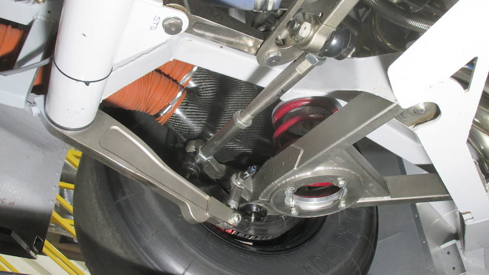

Mechanical Tuning
Mechanical tuning relies on changes thet give the car mechanical grip. This is achieved by changing certain adjustement in the cars including suspensions, springs,
steering ratio and others. Increasing mechanical grip gives the care a state of stability that is constant with the racetrack regardless of wether or not the car
is in traffic. These adjustements however, have to be changed throughout a race to account for the varying track temperatures and tire residue on the racing surface.
Terms related to suspension:
- Toe-in - Angle at which front wheels are facing toward or awy from each other. Helps with drive off a corner.
- Caster - Changes arrrangement of the wheels relative to the wheel well. Makes the steering heavier, affecting turn in to the corner making the car loosr or tight.
- Camber - Angle at which the front wheel are leaning out. Increases grip in the middle of a corner or a banking. Not enough or too much camber will cause the car to get loose. 0 degrees of camber would cause the car to be tight in the corner.
- Steering ratio - Changes how big the wheel is. Increase or decrease the ratio between the turn of the steering wheel and the wheels. Helps with consistency, helpful while saving the car from a slide.
